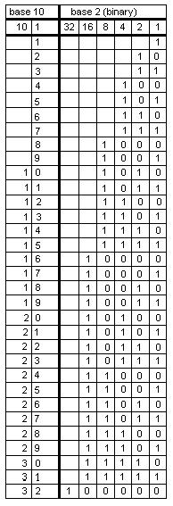
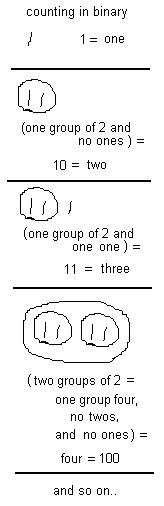
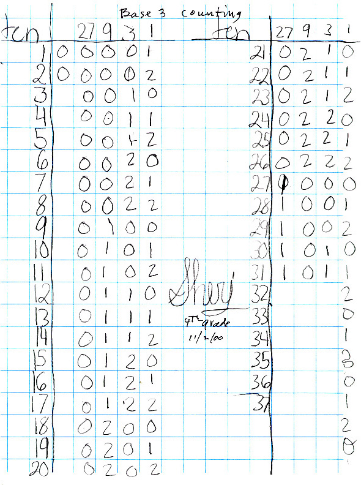
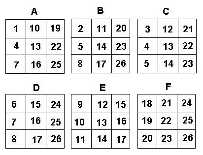

Sheri and The Magic Number Cards
Make a set of these 5 cards.
As the leader, you say "Pick a whole number from 1 to 31 and don't tell me what it is. I will tell you your number. Is your number on card A? Is your number on card B? " and so on through card E. If the person says their number is on cards A, B and D, for example, you add the numbers in the upper left hand corner of those cards A, B and D, or 1 + 2 + 8 = 11 which is the person's number! Now try this on your friends, parents and teachers!
Sheri wanted to know why this worked, so Don started counting in base 2 or binary numerals. In our decimal system, every time we get ten of something we have one of the next place. In binary, every time we have two of something we have one of the next place:


Notice that in the ones place in binary, the numerals with a 1 are 1, 3, 5, 7, 9, 11, .. the odd numbers to 31. These are the numbers on card A. The numbers with a 1 in the twos place are 2, 3, 6, 7, 10, 11, to 31.These are the numbers on card B. And so on. Sheri saw a pattern with the numbers in each column.. in the ones column they alternate 1, 0, 1, 0, 1, 0, ... In the twos column, they go down 1, 1, 0, 0, 1, 1, 0, 0, and so on. Look at the patterns in the other columns. So the trick works because the 1's in a row, say for eleven, 11 = 1011 in binary and that's one 8, one 2, and a 1, which when added 8+2+1 = 11, and those are the numbers in the upper left hand corner of cards A, B and D..
Don asked Sheri how the cards would look if we did them in base 3. From the pattern in the binary chart above and the fact that we can only use 0's, 1's and 2's in base 3, Sheri made the following counting chart by herself figuring out the pattern in each column.

Don and Sheri talked about how the cards would be made. Sheri made the Magic Cards for base 3 below (she even used Don's paint program to make them). In this case one needs to pick a number from 1 to 26. 
Back to Patterns in Mathematics
Sheri writes 64 using exponents
Sheri
solves the quadratic equation x2 - x - 1 = 0
Sheri
finds the base for Don's age of 114? =
7110
Sheri
uses the quadratic formula to find base for Don's age of
114? = 7110
Sheri
finds the measure of an inscribed angle
Sheri
changes the shape of a dog using matrices
Sheri
enlarges a shell using the pantograph
Sheri
moves a parabola and finds the equation
Sheri
finds the ratio of The Volume of a Pyramid / The Volume of a Cube (3 ways)
Sheri
works with the sand pendulum
Sheri
figures out a rule for The Tower Puzzle
Sheri
starts Trig
{kind=link}